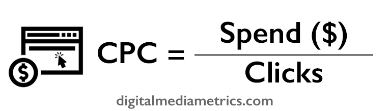

Cost per click (CPC) calculator
What is the definition of CPC?
Cost per click or CPC is a metric that defines how much it has
cost you to drive a single click. This is used mostly in pay per click (PPC)
advertising campaigns whereby you only pay when a user
clicks
on your ad; you will not pay if the impression was served but was not clicked on -
giving you the added bonus of additional impressions that may increase awareness for zero
cost.
Regardless if you are buying on a CPC model, you are able to monitor
the CPC for all marketing channels, vendors and ads if you have access
to the spend and number of clicks generated. Combined with the data from
your analytics platform (e.g. Google Analytics), you will be able
to understand the type and quality of traffic you are driving from
your marketing efforts. You may have the most efficient CPC from
one vendor but if the bounce rate is high or your target audience
is not converting, then it could be worth increasing your CPCs that
may in turn lead to lower CPAs (cost per acquisition).
If your KPI (key performance indicator) is to drive traffic to a
particular URL or landing page, and you are testing multiple copy
variants or creatives, CPC is a great metric to judge effectiveness.
Please note, for
branding campaigns when your KPI is not performance driven,
CPC is a redundant metric because in many campaigns it is irrelevant
if a user
clicks on an ad or not. Simply getting the ad or message in
front of an eyeball is enough to increase awareness of the brand.
Cost per click (CPC) formula
To calculate cost per click (CPC), you will need the following metrics:
1. Spend
2. Clicks driven

How is CPC calculated in PPC and Adwords?
Cost per click in Google Adwords (the primary platform for running
PPC campaigns online) is the main buying method. When running a PPC
campaign, you will only be charged when someone
clicks
on your ad, hence cost per click.
The price per
click varies considerably and is affected by the following:
- Your maximum CPC bid
- Competition
- Ad rank
- Quality score (the rating Google gives your ads based on
how relevant your ad is to what the user is searching for
and how relevant the landing page is to the ad copy)
So what is a good CPC? There is no right answer for this, but you
must judge it based on your industry average and how much you are
willing to pay to drive conversions and quality traffic. A company with
a high value product or service (e.g. B2B) will accept a far higher
CPC than an FMCG brand for example.
Generic keywords will also require far higher CPCs than brand terms.
This is because when a user searches for a generic term (e.g. car parts)
they do not know which brand they are looking for. If you can appear
with a high ad rank (paying a premium CPC) you are more likely to
influence a user to buy from you.
With a combination of brand and generic terms, you should implement
a CPC strategy whereby you are diversifying your CPCs - bidding
higher for generic and more valuable terms and bidding lower for
branded terms to defend your name and site traffic against competitors.
How to lower CPC in PPC and Adwords
Lowering CPC is no easy feat and you want to ensure you are not lowering
it for the sake of it and are causing negative effects on your conversion
rate or CPA.
CPC networks - in particular Google Adwords and Bing - want the ads to
be as relevant as possible to the user, to ensure people do not get fed
up with ads and block them.
You are rewarded the more relevant the ad copy and landing pages regarding
the keywords you are bidding on are, with a higher quality score. If you
increase your quality score, you will ultimately have lower CPCs.
To improve your quality score you must do the following:
- Improve relevance of your ad copy to the keywords you are bidding on
- Increase CTR (click through rate) by using more compelling
ad copy
- Improve quality of your ad and landing page, to ensure the landing
page a user arrives on is completely relevant as well as easy to use
for their desired search intent